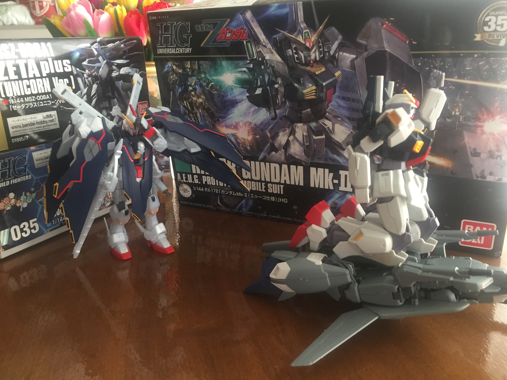

Hi, you may have noticed the lack of content on this blog and I can explain, I swear. With the current issues in the world regarding the Corana virus, many of us are practicing social distancing and self isolation. While this gives me more time to spend on building plastic models, it does make buying paints and tools for customisation difficult. Especially when I keep putting off going outside and getting excesses in say paint but forgetting to replace old or broken tools. Yup, The lack in activity is not because I got side tracked and forgot that this existed, definitely not. I totally have not been messing around with the models right after assembling them or anything.
Anyways, there are some reviews on the kits I have built recently on the way and hopefully soon.